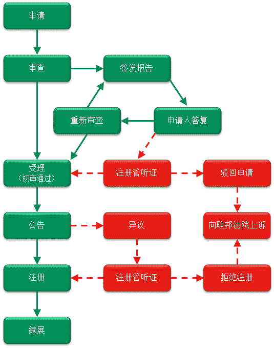

中国企业到澳大利亚注册商标的六大理由
如果贵公司正在向澳大利亚出口商品和/或服务，或贵公司计划向澳大利亚出口商品和/或服务，选择在澳大利亚注册商标对于保护贵司在当地市场的品牌及开拓当地市场具有重要意义
- 商标专用权――您可以阻止和防止他人未经授权使用您的商标（例如仿冒产品）。如果您的商标未经注册，除非该商标已经在澳大利亚具有知名度，否则您无权阻止和防止他人未经授权擅自使用您的商标。
- 全国范围内的保护――商标一经注册，即可在澳大利亚全国范围内受到保护。如商标未经注册，则其受保护的地域范围通常局限于您能证明该商标已取得知名度之地域范围。
- 宝贵资产――注册商标是企业的宝贵资产。通过许可他人使用或转让该资产，您可以获利。
- 降低救济成本――商标一经注册，如若出现商标侵权，在主张救济时，您无须证明该商标具有知名度。证明商标的知名度通常比较困难，而且代价高昂。
- 提升品牌竞争力――注册商标能增强分销商对您品牌价值的认识，提升您的企业形象，有效地帮助您拓展当地市场。
- 降低风险――如若您的商标已在当地被他人注册，则贵司产品在进入澳大利亚时可能面临被海关扣押的风险。即使不被扣押，也可能面临商标侵权的诉讼，或为避免侵权纠纷，不得不终止使用该品牌，从而蒙受巨大损失。
您可能不知道
- 在澳大利亚注册商号、公司名称或域名，并不能给予您将该名称作为商标使用的排他的专用权。
- 在澳大利亚注册商标涉及的费用并不昂贵。(请联系马轶珂律师查询相关费用。)
- 在商标正式注册之前，甚至在您提出商标注册申请之前，您就可以使用该注册商标。
哪些标记能注册成为商标？
商标的功能是用来区分您提供的商品和/或服务与他人提供的商品和/或服务。能在澳注册成为商标的标记包括
- 单词
- 姓名
- 数字
- 图标
- 图形
- 包装的某个方面
- 形状
- 颜色
- 气味
- 声音
- 以上标记之组合
在澳大利亚申请注册商标的流程
在澳大利亚申请注册商标流程如下
- 商标检索
- 准备及提交申请
- 审查
- 受理（初审通过）
- 公告异议
- 注册
商标注册的详细程序包括主要步骤（绿色实线）见下图

商标检索
尽管商标检索不是申请注册商标的强制性步骤，但对于降低您申请和使用商标的风险及可能涉及的法律费用却是至关重要。在您就您的商品和服务展开营销之前，先进行商标检索是非常必要的。商标检索可以
- 披露您的商标是否已被注册或正在被申请注册
- 您的商标是否侵犯他人的权益
- 降低在申请过程申请被驳回的风险
- 降低日后发生商标纠纷的风险
注意澳大利亚的商标保护与中国存在以下不同
- 在澳大利亚首先使用商标的使用人相对于首先申请注册该商标的申请人具有优先权。
- 在澳大利亚，未注册但已经具有一定知名度的商标，可以构成对抗使用或注册近似商标的基础。
马轶珂律师可为您提供以下检索服务
- 基本检索――初级数据库检索，检索已注册和审查中的与拟申请注册之商标一致的商标，检索不局限于同类别的商品和服务
- 标准检索――深度数据库检索，检索已注册和审查中的与拟申请注册之商标一致和相似的商标，检索不局限于同类别的商品和服务
- 全面检索――全面的数据库检索（包括黄页、公司登记名册等），检索已注册和审查中的与拟申请之商标一致和相似的商标，已使用但尚未注册之与拟申请注册之商标一致和相似的商标，及名称中包含拟申请注册之商标的商号及公司名称
无论您选择上述哪一种检索，马轶珂律师均会为您出具一份检索报告，该报告会就拟申请注册之商标的可注册性（显著性）、注册该商标面临的风险出具分析意见，并会根据您提供的对商品及服务的描述就如何选择注册的类别提供分析意见。
上述报告根据您的选择， 可以中文、英文或中、英文出具。
您可联系马轶珂律师索取检索报告的范本。
准备及提交申请
在准备申请的过程中，您需要作出很多重大的决策。此等决策将决定您拟申请之商标受保护的范围，你面临的决策主要包括
- 选择申请人；
- 判断构成您品牌的核心元素。该等元素可能包括商号、公司名称，产品及/或服务的名称，独特的包装等；
- 对您目前正在提供或将来拟提供之商品/或服务作出适当的、准确的及有预见性的描述；及
- 注册时应选择的类别（包括一个类别或同时注册多个类别）
马轶珂律师可帮助您分析您品牌之核心元素，确保申请之商标注册能保护您品牌之核心元素，从而强有力地保护你的品牌权益。
注意：
- 在澳大利亚商号不能成为产权的所有人。因此在提出商标申请时，必须以个人名义、商号所有人的名义或公司的名义来提出申请。
- 申请一经受理及公告，不允许增加申请注册之商品或服务。
基本的申请要求
与中国不同，在澳大利亚申请注册商标，不需要授权委托书。申请时，须提供的信息如下
- 申请人的名称及地址
- 清晰的商标图案
- 拟申请的商标类别（可同时申请多个类别）
- 拟申请之商标所涵盖的商品和/或服务的描述
- 如果商标是中文汉字，要将其翻译成英文和音译（如汉语拼音或其它的语音形式）
- 任何根据《巴黎公约》要求优先权的信息（如适用）
- 澳大利亚境内的联系地址
审查
一般在您提交申请后3至4个月内，审查员会对您提交的申请进行审查。如审查员认为
- 您的申请符合商标注册的基本要求，则您的申请会被正式受理，并排期公告 （类似中国的初审公告）
- 如果您的申请不符合商标注册的全部要求，则审查员会出具一份不利于商标注册的报告（类似中国的驳回申请）
常见的不利于商标注册的审查报告援引的驳回申请的理由主要包括
- 拟申请之商标不能区别申请人的商品及/或服务
- 拟申请之商标含有他人可能需要使用之单词或短语
- 拟申请之商标与另一商标一致或实质性相似
从不利于商标注册的报告签发之日起，您有15个月来作出回应。
如果审查员签发了不利于注册申请的审查报告，马轶珂律师可以帮助您
- 分析审查报告援引的拟驳回申请的理由，并提出解决方案
- 就如何回复审查报告提出分析意见，收集及指导您收集相关的支持证据 （如需要）
- 针对不利于注册申请之审查报告起草回复
- 起草法定声明，就审查报告作出回复（如需要）
如若在提交证据后，您的申请仍被驳回，您可以选择要求注册官对驳回事项进行听证。如果进入听证阶段，马轶珂律师可代表您出席听证。
申请受理（初审通过）
如初审通过，会向申请人签发该商标的公告及受理通知书。
公告异议
商标异议是指第三方要求驳回根据《澳大利亚商标法》（1995）提出之申请（包括商标注册申请）而提起之程序。在申请公告之日起3个月内，任何第三方均可向澳大利亚知识产权局（ IP Australia）提出异议申请。
商标注册
如果没有第三方就您的商标申请提出异议，或该异议未能成立，则您可以支付注册费正式注册该商标。商标首次登记的有效期为10年，从提出申请之日起计算。
异议
事情不是总按照计划进行。第三方可能就您的商标注册申请提出异议。如果第三方提出异议，您需要收集证据来最大可能地争取您申请的商标能获得注册。
您也有可能对他人提出的申请提出异议。
根据《澳大利亚商标法》（1995）， 任何第三方均可对以下申请提出异议
- 通过初审并已公告之商标注册申请
- 以不使用为理由申请撤销注册商标之申请
- 延期申请超过三个月之申请
- 对商标注册申请进行修改之申请
就已受理的申请（通过初审已公告的申请）提出异议
常见的提出异议的理由包括
- 商标不具有显著性
- 商标与已经注册或正在申请的其他商标一致或实质性的相似
- 商标的申请人并非商标所有人
- 因为另一商标的知名度，使用该申请商标可以造成欺骗或引起混淆
就商标注册提出异议之典型程序如下
- 异议通知――异议通知必须在商标申请之受理公告于澳大利亚商标公报（Australian Official Journal of Trade Marks）发布之日起三个月内向澳大利亚知识产权局提交。在极少数情况下，商标注册管可能批准延长提交及送达异议通知的期限。延期申请仅能提出一次，最长只能延长三个月。
- 举证阶段――任何一方提交的证据都必须以法定声明的形式作出，原件必须提交澳大利亚知识产权局。除极特殊的情况而外，举证期限届满后，听证阶段不再允许提交新证据。举证阶段包括：
- 支持证据――支持异议的支持证据必须在提交异议通知之日起三个月内送达申请人或其代理人
- 答辩证据――就异议进行答辩而使用的相关证据必须在申请人收到支持证据之日起三个月内送达异议方
- 答复证据――就申请人之答辩进行答复所使用的相关证据，必须在异议方收到答辩证据之日起三个月内送达申请人
- 异议的裁决――异议事项可通过听证会进行裁决，也可由商标注册管根据书面记录所显示的资料进行裁决。如果一方或双方均要求举行听证会，则异议事项会通过听证会进行裁决。原则上，在听证会不对异议事项直接作出裁定。书面的裁决书会在之后发送给双方。
- 上诉――任何一方均可就上述裁决向联邦法院提出上诉。
异议程序通常耗时较长，程序繁琐且费用昂贵，因此澳大利亚知识产权局建议异议涉及的双方（异议方及申请人）咨询专业的知识产权人士。
凭借多年的诉讼经验，马轶珂律师可以代理您提出商标异议或就第三方提出的商标异议进行答辩
- 分析异议事项，提出解决方案
- 收集证据及指导您收集证据以支持您的案件
- 起草法定声明
- 起草保密协议 (如在提交之证据中披露了保密信息)
- 与对方进行谈判
- 准备和解协议
- 代表出席听证
以上异议程序原则上适用于其他根据《澳大利亚商标法》（１９９５）向澳大利亚知识产权局提出之异议。
针对以不使用为由申请撤销注册商标之申请而提出的异议
常见的申请撤销未使用商标的理由包括
- 商标所有人未使用该商标
- 商标所有人未善意使用该商标
- 商标所有人从未有使用该商标的意图
异议要获得支持必须证明该商标在《澳大利亚商标法》（1995）规定的时间内得到了合理使用。
针对申请延期超过三个月之申请而提出的异议
常见理由包括
- 之前已给予了充分的时间
- 申请延长之期限过长
- 如果批准该延期申请，会对另一方的权益造成不利影响
针对申请对商标注册申请进行修改之申请而提出的异议
任何第三方如认为对商标注册之申请进行修改可能对其权益造成不利影响，该第三方可就该修改申请提出异议。
侵权
有没有商标律师告知您，您侵犯了其客户的商标权益？
您需要商标律师帮助您解决可能对您商标构成侵权的事宜吗？
马轶珂律师可以向您
- 提供法律意见
- 进行诉讼前的谈判
- 制定风险管理策略
- 代理出席在澳大利亚知识产权局举行的听证
许可
有客户联系您希望使用您的商标来推销其产品及服务吗？
马轶珂律师可向您提供
- 商标许可及/或转让之分析意见
- 起草许可协议及/或转让协议，并代表进行谈判
- 审阅许可协议及/或转让协议
选择马轶珂律师的七大理由
- 专业――经澳大利亚有关政府机构正式注册的商标律师（您可避免向其他中介机构支付不必要的费用）
- 务实――提供务实的可操作的解决方案
- 中国背景――具有中国律师执业资格，了解中国企业文化及商业环境
- 经验丰富――具有在中国及澳大利亚知名律师事务所服务的丰富经验
- 中文沟通――大量节约准备申请及处理商标纠纷的时间及成本（一旦发生纠纷，在您耗费大量的时间及金钱将相关资料翻译成英文前，马轶珂律师可事先对相关资料进行筛选）
- 敬业―― 委托事项一经正式受理，任何查询，马轶珂律师将在２４小时内予以回复（节假日除外）
- 收费合理――您可以选择按小时计费（根据实际工作量）或固定计费